PCA filtering¶
Filter signals using PCA decomposition (sklearn.decomposition.PCA()) of their fast-fourier transform
- Identify outliers in fft-transformed signal with
PrepareData.MD_removeOutliers()- Identify clusters in ft-transformed signal with
PrepareData.Cluster()
import LoadingData.ReadData as rd
import Preprocessing.PrepareData as pd
in_path = '/Users/ryszardcetnarski/Desktop/Nencki/Badanie_NFB/Dane/fft_treningi/'
filter_list = ['P3_trening_','P4_trening_', 'F3_trening_', 'F4_trening_']
#load averaged fft from trainings
signals_dict = rd.LoadAvg(in_path, filter_list, freq_lim = [15,40])
#label the outliers
labels, signals_colum_major = pd.FilterIndividualAndGroup(signals_dict, plot_on = True, log = True)
#Plot'em
pd.MarkOutliers(labels[labels['mask'] ==1], rd.LoadAvg(in_path, filter_list, freq_lim = [0,50]))
N outliers inside individual: 338, 0.039348 %
For n_clusters = 2 The average silhouette_score is : 0.735854433865
N outliers across group: 539, 0.065317 %
 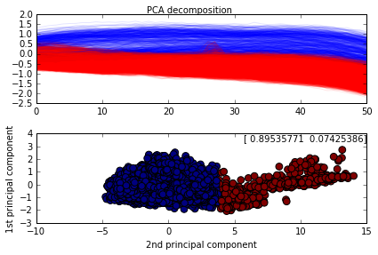
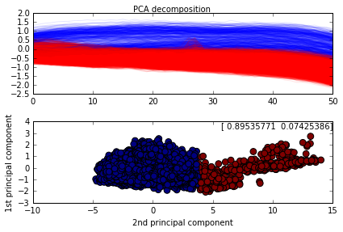


 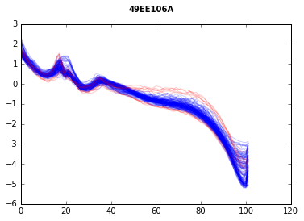
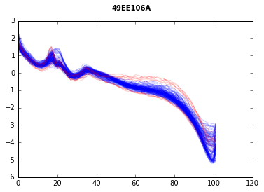


 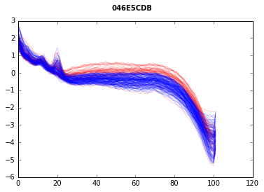
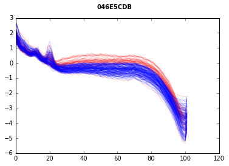


 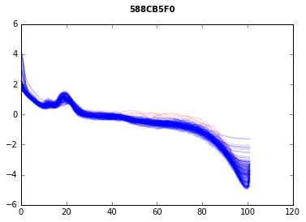
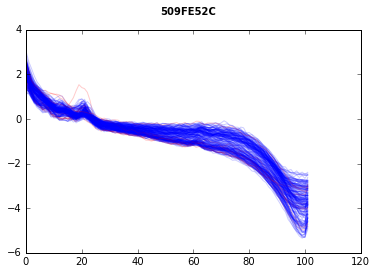
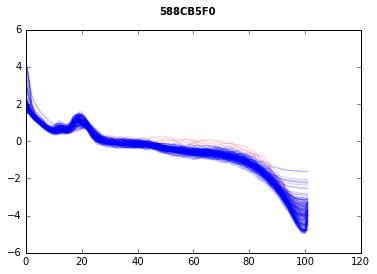
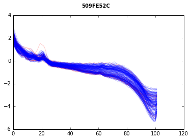


 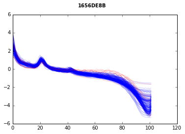
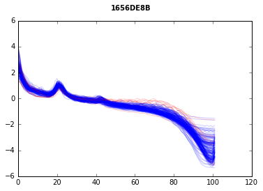